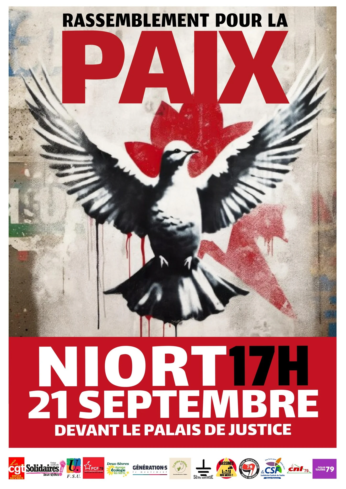
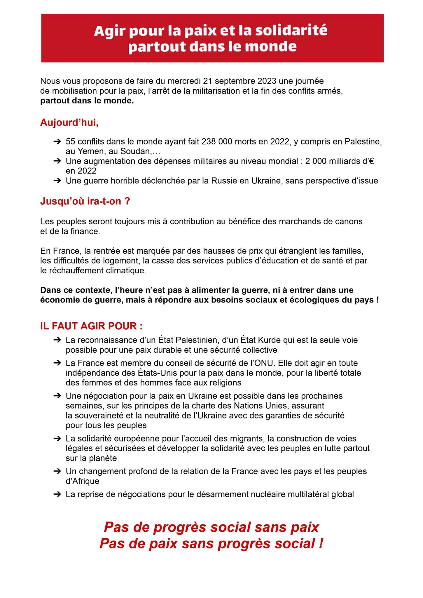

Appel relayé
À Niort, appel au rassemblement pour la paix du 21 septembre
Date indiquée par Facebook · 19 septembre 2023
Repères éditoriaux
Le rendez-vous annoncé était à 17 h devant le palais de justice de Niort. L’affiche et l’appel donnent les revendications et les organisations engagées.
Texte conservé avec la publication
Rassemblement pour la PAIX
JEUDI 21 SEPTEMBRE à 17 heures
Devant le Palais de Justice NIORT


Sources
Archive rouge · export Facebook · AR-0002-FB-01582
À lire aussi · Le PCF dénonce le rôle de l’OTAN